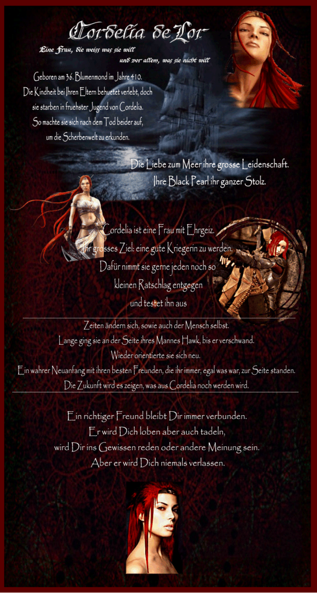

|

|
Das schwarze Brett
|
|
| Übersicht,
Geschichten (RPG) |
|
Das Leben kann so schön sein... (912  ) )
|
| Cordelia deLor (RIP) |
Ich sitze gerade in meinem Zimmer in Dragon´s Dom. Wo Felerian steckt - weiß ich nicht. Wie ich hier hergekommen bin - weiß ich nicht. Ich bin erst vor einigen Momenten erwacht. Der Sturm über das Meer hat mich geweckt. Es sieht düster draußen aus, wenn ich aus dem Fenster blicke. Es scheint, ein heftiger Sturm wird uns ereilen. Doch ich bin wegen ein wenig Wind noch nicht beunruhigt. Am liebsten wäre ich nun auf dem Meer. Auf der Pearl. Sie liegt wie majestätisch einige Meter weiter im Meer. Ich kann sie von hier aus sehen und schaue sie immer wieder an. Mein ganzer Stolz... diese Schiff … meine Black Pearl… die schwarze Perle. Einst benannt von meinem verstorbenen Freund Ismael. Ich vermisse ihn sehr und doch habe ich ein gutes Gefühl dabei. Viel habe ich schon auf der Pearl, wie ich sie kurz immer nenne, erlebt. Gutes und schlechtes. Sie trägt Erinnerungen mit sich. Ich schaue auf meine rechte Hand und sehe, dass noch der Ringfinger die Kennzeichnung eines mal dort sitzenden Eherings trägt. Ich streiche drüber weg und schmunzele ein wenig. Dann nehme ich meine Aufzeichnungen und blättere in diesen. Einige Erinnerungen holen mich ein. Ich lese einiges, doch dann schlage ich die erste leere Seite auf und nehme Feder und Tinte zur Hand und beginne zu schreiben.
Es ist nun Ende des Erntemonds im Jahre 450. Es stürmt draußen und ich fühle mich wohl dabei. Ich lebe da, wo ich wohl immer sein sollte.
Eben habe ich auf meine rechte Hand geschaut. Noch vor einigen Tagen war ich verheiratet. Heute bin ich es nicht mehr. Wir trennten uns im Einvernehmen. Er hat sich wieder gefunden. Lange war er verschollen für mich. Fast 4 Scherbenjahre trug ich den Ring, ohne, dass ich meinen Mann sah. 4 Jahre sind eine lange Zeit, in der sich sehr viel verändert hat bei mir. Nun vor einigen Tagen tauchte er wie aus dem Nichts wieder auf. Wie sich doch die Menschen verändern, wenn sie sich lange nicht gesehen hatten. Und wir haben uns dann getrennt. Ich will ihm nicht im Wege stehen, so wie er auch mir nicht. Ich werde sehen, was die Zukunft bringen mag. Sie liegt in meinen Händen nun. Nur ich bin dafür verantwortlich.
Letztes Jahr sind meine Kinder in die Weite Welt hinausgezogen. Christina hatte sich einen schönen Flecken sehr weit weg ausgesucht. Sie ist erwachsen geworden, und ich kann ihr nichts mehr beibringen. Tarion und ich sind im Streit von einander gegangen. Ihm gefiel meine Lebensart nicht und er wollte unbedingt seinen Vater kennen lernen. Ich weiß nicht, was aus ihm mal werden mag, und ob er irgendwann zurückkommt. Doch ich lies beide ziehen. Sie werden auch ohne mich ihr Glück machen. Sie sind erwachsen. Ein wenig traurig bin ich darüber, doch ich zeige es keinem. Ich bin eben Cordelia und niemand anderes. Ich gehe meinen Weg und lasse mich nicht beirren.
Sonst hatten wir die letzte Zeit viel Spaß in der Nation. Sie ist klein, aber dafür unendlich familiär. Ein Jeder hilft dem anderen. So etwas habe ich selten erlebt. Necros ist Bürgermeister geworden und scheint es wirklich zu genießen solch ein Amt zu tragen. Man sieht es ihm richtig an und ich muß sagen, er mausert sich richtig. Er geht mit mir los. Ich steure das Schiff über die Meere und gemeinsam gehen wir auf die Suche nach dem Ungewöhnlichen.
Felerian ist oft auf Reisen. Zum Glück gibt es die Täubchen, so halten wir beide immer Kontakt, wenn wir gerade am anderen Teil der Scherbe uns befinden.
Shaya lebt im Moment sehr für ihre Brotverarbeitung. Ich muß aufpassen, dass sie sich nicht kugelrund damit isst und irgendwann durch Dragon´s Dom rollt. Na ja, sie scheucht ihr Leutchens aber auch. Aber sie macht das schon. Vor einigen Tagen habe ich sie an die Hand genommen und bin mit ihr ein paar Rammis aufmischen gegangen. Oh, was für ein Spaß war das. Wie eine Wilde ging sie auf die blauen Monster los. Ich konnte sie kaum bremsen. Später abends haben wir uns erstmal ausgeruht. Ich bin wohl mal wieder auf dem Sofa in unserer Taverne eingeschlafen. Ja, wir haben unseren ganz persönlichen Spaß.
Ach, da erinnere ich mich an die Erntemondstürme, die auch Long Island erreichten. Felerian und ich sind gemeinsam los gezogen. Doch traf einer meiner Leute zu schnell. So waren sie schneller entschwunden als das Felerian überhaupt eine Chance gehabt hatte. Oh, wie mich das ärgerte. Aber es war ja nicht der einzige Sturm, dem wir ins Auge sahen. So konnte auch Felerian seinen Erfolg feiern. Ja, der kleine Felerian – mein Freund. Ich fühle mich sehr wohl hier.
Ich puste noch mal über das geschriebene und ein breites Grinsen in meinem Gesicht dabei erscheint. Dann klappe ich meine Aufzeichnungen zu und lege es weg
Freifrau Cordelia deLor,
Das Beste der Nation
Zur 23. Stunde am 80.Erntemond im Jahre 450 |
12.05.12 21:38
|
|
| Cordelia deLor (RIP) |
 
Bald ist es soweit… Nicht mehr lange und ich werde meine letzte Reise antreten… meine letzte Reise mit an der Seite meines Mannes Felerian… Einen Mann dem ich meine Herz geschenkt habe… einem Mann von Wissen und Weisheit… MEINEM Mann
Die Scherbe ist dann nicht mehr länger meine Heimat. Materielle Dinge übergebe ich meinen Freunden und mein Erbe soll Someone bekommen, einer meiner Besten und längsten Freunden. Someone war seit er die Scherbe betrat jemand, auf den ich mich IMMER verlassen konnte. Someone ist mit Güte gesegnet. Möge er Weise mit dem Erbe umgehen.
Wir schreiben das Jahr 463 und die Scherbe ist stehen geblieben. Niemand kümmert sich mehr um seine Nachbarn. Niemand kümmert es etwas, was aus anderen wird. Niemand hilft den Schwachen, den Kleinen… Es war einst ein König, der wollte das genaue Gegenteil. Ein König, der Gerechtigkeit über die Menschen, Elfen, Zwerge und Halblinge brachte – gegen ihre gemeinsamen Feinde den Minotauren. Doch dies ist viele, viele Monde her. Lange bevor ich die Scherbe betreten habe. Doch ich kenne die wahren Geschichten… Geschichten, über die niemand mehr spricht. Sondern jeder der über den „Anfang“ spricht, verdreht die Wahrheit zu seinen Gunsten. So soll es bleiben. Auch ich nehme meine Erfahrungen und mein Wissen nun mit mir. Niemand soll es weiter erfahren.
Ich durfte viele Freundschaften knüpfen hier auf Scherben… und einige Freundschaften die über den Tod hinausgehen werden. Aber ich gehe nicht in den Tod, sondern werde nur diese Welt den Rücken kehren… Ich habe in vollen Zügen das Leben auf Scherben genossen und danke allen, denen ich in den letzten Jahren begegnet bin… doch niemand war so, wie es Felerian ist… Niemand gab mir das, was mir Felerian gibt, niemand konnte so sehr in mein Innerstes sehen und mich verstehen, wie es Felerian kann… Felerian – Ich liebe dich. Ewig mit dir durch alle Gefahren - um alles gemeinsam zu überwinden. Die Liebe – das höchste Gut.

Was bringt Reichtum im Gelde? Was bringt Reichtum in Macht? Nichts im Vergleich zu Freundschaft und Liebe. Ich lebe lieber mit jemanden zusammen, mit dem ich in der Not auch ein trockenes Brot teilen kann, als in einem goldenen Käfig eingesperrt zu sein. Ich will mich selbst noch in einem Spiegel ansehen können.

Möge die Scherbe einst zu einem wundervollen Ort werden… jedoch ohne mich…
Gehabt Euch wohl

Cordelia legt ihr Buch beiseite, doch versteckt sie es nicht mehr. Offen bleibt es liegen. Selber geht sie die Reste verteilen, die sie nun nicht mehr brauchen wird.
Cordelia deLor,
Das Beste der Nation,
Ehefrau des ehrenwerten Felerian
Zur 14. Stunde am 28.Erntemond im Jahre 463 |
03.05.15 16:17
|
|
| Cordelia deLor (RIP) |
Kapitänin der "Black Pearl"
Ein letztes Mal geht Cordelia zum Anleger. Dort erwartet sie schon ihre Mannschaft. Ein wenig Trübsal hängt in der Luft und es ist in den Augen der Männer und Frauen zu lesen, dass sie ungern Abschied nehmen wollen. Cordelia ist in Hose und Bluse wie immer auf Seereisen gekleidet. Doch diesmal geht sie nicht mit auf Seereise. In den Händen hält sie ein Pergament. Langsam schreitet sie auf die Mannschaft zu und im Hintergrund liegt sie – die stolze Black Pearl - Ihr ganzer Stolz. (Benannt durch die Hilfe von Ismael.)
Amyl steht ganz hinten. Vorne in dem Durcheinander steht der Zwerg, dem es vor vielen Monden mit Unlust betrübte als er das Meer sah – das ist aber schon längst Vergangenheit. Sie nimmt einem nach dem anderen in den Arm und flüstert diverse Dinge ihnen dann in die Ohren. Ein Schmunzeln auf jedem angesprochenen Gesicht erscheint und ein Kuss zum Abschied auf der Wange.
Dann ist Allsun an der Reihe und Cordelia spricht mit lauteren Worten, dass ein jeder ihrer Mannschaft sie hören vermag:
„Allsun, mein Seemann vom ersten Tag, der mich noch so einiges leerte. Heute ist der Tag des Abschiedes gekommen und ich möchte dir meine so geliebte Pearl in deine Hände übergeben. Führe sie immer in sicheren Gewässern und behalte stets die Freiheit in deinen Händen. Hiermit habt ihr sie auf ewig.“
Mit einer Geste der Achtung übergibt sie die Urkunde des Schiffes, was sie einst alle gemeinsam in Harten Arbeiten und windigen Gewässern erhalten hatten. Allsun bekommt kein Wort aus dem Munde und somit umarmt er sie nur kurzerhand und nickt ihr danken zu. Muirne und Cadhla kommen auf sie zu, doch noch eher beide ein Wort gegen diesen Abschied sagen können plappert Cordelia auf sie ein
„Na ihr zwei… ihr seid immer noch ein Herzchen und ein Seelchen“
lachend umarmt sie eine nach der anderen fest. Sie flüstert ihnen in die Ohren
“Passt auf die Haudegen auf. Sie brauchen eure treue Hand.“
Ihr blickt schwenkt immer wieder zu Amil. Er sieht zu, dass alle nach und nach in die Beiboote steigen um zu Pearl zu rudern. Als sie beide dann allein da stehen, schaut er Cordelia an und lächelt:
„Du bist um kein Jahr mehr gealtert meine Liebe… du bist so schön, wie zu deiner Blüte… an dem Tag wo du Felerian wieder trafst“
Er hält inne und schaut zu Boden… doch noch ehe diesmal Cordelia was sagen kann, tritt er auf sie zu „Du weißt, wer er ist. Er hat es dir längst erzählt… doch er sagte es dir nicht mit Worten, er zeigte es dir… Du tust ihm gut, so wie dein Name es im Sindarin auch sagt… du bist es, die er immer gesucht hat … so viele Jahre und ja auch ich weiß, wer er ist…. Und darum will ich dir das schenken“
Er holt ein leuchtendes Amulett hervor und legt den Zeigefinger auf Cordelias Mund
“Ja es ist meine Unsterblichkeit… doch ich benötige sie nicht mehr… schau dich um, die da hinten brauchen mich jetzt viel mehr als irgendwer anderes und du brauchst das hier, auch wenn Felerian in seiner Welt alles für dich tun wird. Er wir wissen, warum ich mich so entschieden habe. Tief im Inneren kennt er auch mich.“
Er legt ihr sein Amulett um den Hals und steckt es in ihren Ausschnitt
“Niemand außer ihr beiden braucht dies zu sehen. Und nun muss ich zu der Mannschaft.“
Er schaut in den Himmel “Dunkle Wolken ziehen auf und ich möchte noch vor Einbruch der Nacht auf See sein“ Schnell umarmt er sie und im nächsten Moment ist er verschwunden.
Sie schaut allein zu der Pearl hinüber und seufzt “Ihr werdet mir fehlen – ihr nutzloses Gesindel“ … bei diesen Worten eine Lächeln über ihr Gesicht huscht…Ihren Arm in die Luft reist und wie wild zu winken beginnt…nach einer ganzen Weile nimmt sie den Arme runter und schaut auf das „leere“ Meer…
Langsam geht sie zurück zu der Taverne. Felerian wartet schon im Eingang auf sie und nimmt sie in die Arme. Er küsst sie auf die Stirn und hält sie fest an sich gedrückt.
“Ich weiß meine Süße“ dabei leise zu ihr sagt und verschwindet mit ihr.
Lady Cordelia deLor,
Das Beste der Nation,
Ehefrau des ehrenwerten Felerian
Zur 5. Stunde am 85.Dunkelfrost im Jahre 463 |
06.06.15 21:20
|
|
Übersicht,
Geschichten (RPG)
|
|
|
|